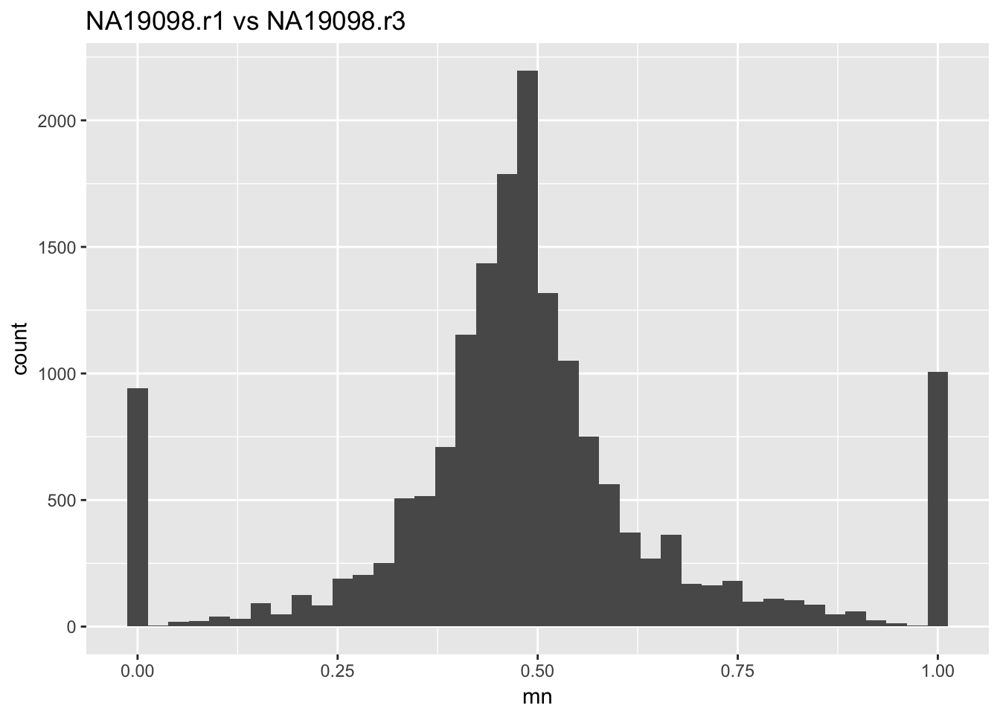
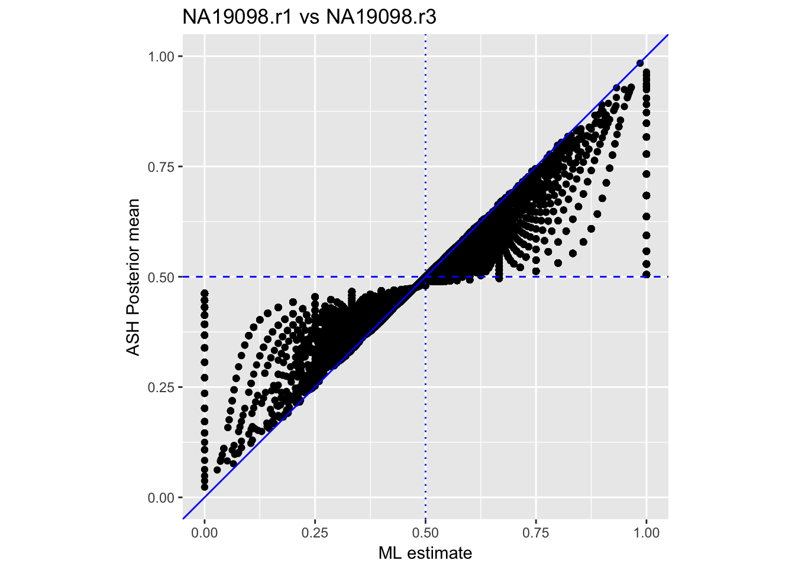
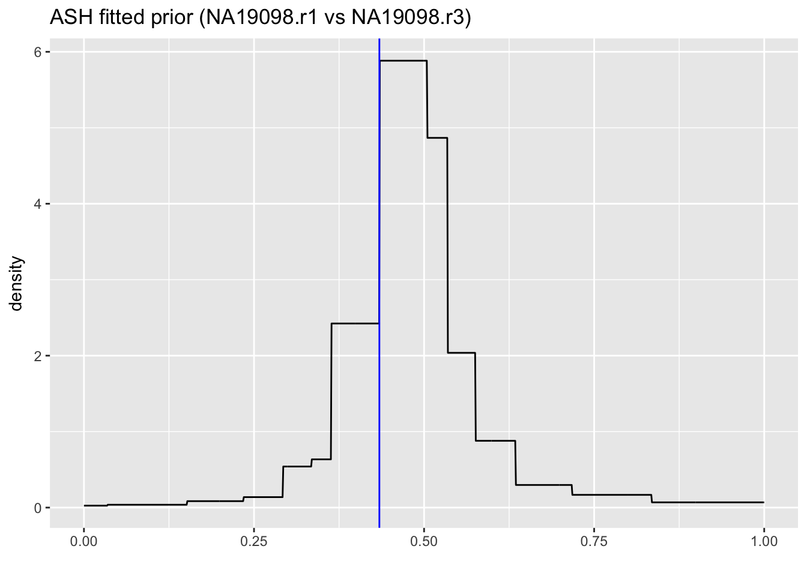
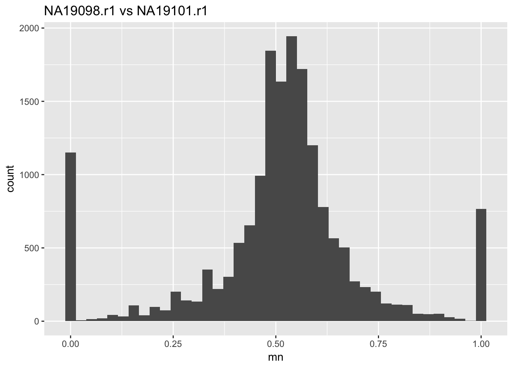
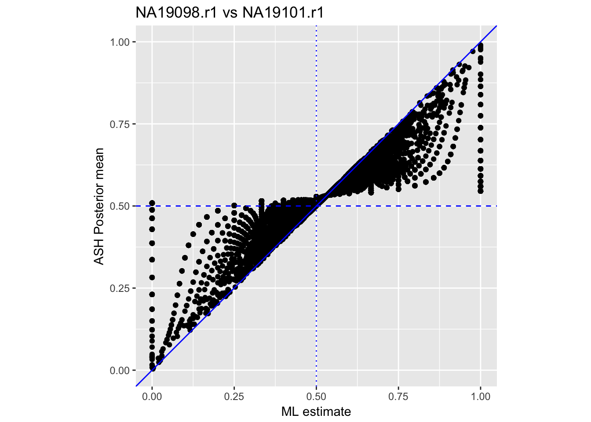
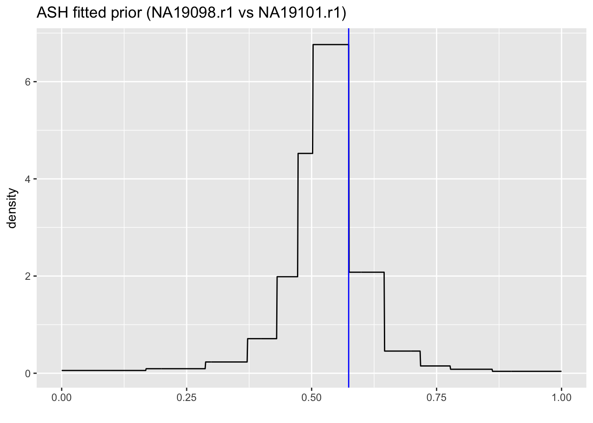

Last updated: 2017-04-20
Code version: f725a9a
library(tidyr)
library(dplyr)
# Data: individual NA19098, replicate 1 and 3
load("../data/NA19098.sums.Rda")
# discard genes with 0 count
counts_r1 = NA19098.sums[,1]
counts_r3 = NA19098.sums[,2]
counts = data.frame(counts_r1, counts_r3)
counts = counts[which(rowSums(counts)>0),]
head(counts) counts_r1 counts_r3
ENSG00000237683 24 23
ENSG00000187634 0 2
ENSG00000188976 280 242
ENSG00000187961 12 24
ENSG00000188290 7 2
ENSG00000187608 251 182Histogram of the ML estimates:
library(ggplot2)
ggplot(data.frame(mn = with(counts, counts_r1/(counts_r1 + counts_r3))),
aes(x = mn)) + geom_histogram(bins = 40) + labs(title="NA19098.r1 vs NA19098.r3")
counts$mn <- with(counts, counts$counts_r1/(counts$counts_r1 + counts$counts_r3))Compare ASH’s posterior mean vs ML estimates:
library(ashr)
ngenes = dim(counts)[1]
fit_NA19098 <- ash.workhorse(rep(0, ngenes),1,
lik = lik_binom(counts$counts_r1,
counts$counts_r1+counts$counts_r3),
mixcompdist = "halfuniform")
counts %>%
mutate(posterior_mean = fit_NA19098$result$PosteriorMean,
lfsr = fit_NA19098$result$lfsr) %>%
ggplot(aes(mn, posterior_mean)) +
geom_point(aes(colour = counts_r1), colour = "black") +
geom_vline(xintercept = .5, colour = "blue", lty = 3) +
geom_hline(yintercept = .5, colour = "blue", lty = 2) +
geom_abline(intercept = 0, slope = 1, colour = "blue") +
labs(x = "ML estimate", y = "ASH Posterior mean",
title = "NA19098.r1 vs NA19098.r3") +
coord_fixed(ratio = 1) +
ylim(c(0,1))
ASH’s fitted prior:
# plot density of an unimix object g on x
dens_unimix = function(g, x){
sapply(x, dens_unimix_sing, pi=g$pi, a=g$a, b=g$b)
}
dens_unimix_sing = function(x,pi,a,b){
sum((x>=a & x<=b)/(b-a)*pi,na.rm=TRUE)
}
x = seq(0,1,by=0.001)
dens = dens_unimix(fit_NA19098$fitted_g, x)
ggplot(data.frame(x,dens),aes(x, dens)) +
geom_line() +
geom_vline(xintercept=fit_NA19098$fitted_g$a[1],colour="blue") +
labs(x="", y="density", title="ASH fitted prior (NA19098.r1 vs NA19098.r3)")
# Data: individual NA19098 replicate 1 and individual 19101 replicate 1
load("../data/Two.ind.r1.Rda")
# discard genes with 0 count
counts_NA19098 = Two.ind.r1[,1]
counts_NA19101 = Two.ind.r1[,2]
counts = data.frame(counts_NA19098, counts_NA19101)
counts = counts[which(rowSums(counts)>0),]
head(counts) counts_NA19098 counts_NA19101
ENSG00000237683 24 32
ENSG00000187634 0 1
ENSG00000188976 280 206
ENSG00000187961 12 17
ENSG00000187583 0 2
ENSG00000188290 7 4Histogram of the ML estimates:
library(ggplot2)
ggplot(data.frame(mn = with(counts, counts_NA19098/(counts_NA19098 + counts_NA19101))),
aes(x = mn)) + geom_histogram(bins = 40) + labs(title="NA19098.r1 vs NA19101.r1")
counts$mn <- with(counts,
counts$counts_NA19098/(counts$counts_NA19098 + counts$counts_NA19101))Compare ASH’s posterior mean vs ML estimates:
library(ashr)
ngenes = dim(counts)[1]
fit_twoind <- ash.workhorse(rep(0, ngenes),1,
lik = lik_binom(counts$counts_NA19098,
counts$counts_NA19098+counts$counts_NA19101),
mixcompdist = "halfuniform")
counts %>%
mutate(posterior_mean = fit_twoind$result$PosteriorMean,
lfsr = fit_twoind$result$lfsr) %>%
ggplot(aes(mn, posterior_mean)) +
geom_point(aes(colour = counts_NA19098), colour = "black") +
geom_vline(xintercept = .5, colour = "blue", lty = 3) +
geom_hline(yintercept = .5, colour = "blue", lty = 2) +
geom_abline(intercept = 0, slope = 1, colour = "blue") +
labs(x = "ML estimate", y = "ASH Posterior mean",
title = "NA19098.r1 vs NA19101.r1") +
coord_fixed(ratio = 1) +
ylim(c(0,1))
ASH’s fitted prior:
x = seq(0,1,by=0.001)
dens = dens_unimix(fit_twoind$fitted_g, x)
ggplot(data.frame(x,dens),aes(x, dens)) +
geom_line() +
geom_vline(xintercept=fit_twoind$fitted_g$a[1],colour="blue") +
labs(x="", y="density", title="ASH fitted prior (NA19098.r1 vs NA19101.r1)")
sessionInfo()R version 3.3.0 (2016-05-03)
Platform: x86_64-apple-darwin13.4.0 (64-bit)
Running under: OS X 10.10.5 (Yosemite)
locale:
[1] en_US.UTF-8/en_US.UTF-8/en_US.UTF-8/C/en_US.UTF-8/en_US.UTF-8
attached base packages:
[1] stats graphics grDevices utils datasets methods base
other attached packages:
[1] ashr_2.1-10 ggplot2_2.2.1 dplyr_0.5.0 tidyr_0.6.0
[5] workflowr_0.4.0 rmarkdown_1.4 devtools_1.12.0
loaded via a namespace (and not attached):
[1] Rcpp_0.12.9 git2r_0.18.0 plyr_1.8.4
[4] iterators_1.0.8 tools_3.3.0 digest_0.6.12
[7] lattice_0.20-34 evaluate_0.10 memoise_1.0.0
[10] tibble_1.2 gtable_0.2.0 Matrix_1.2-7.1
[13] foreach_1.4.3 DBI_0.5-1 rstudioapi_0.6
[16] curl_2.2 yaml_2.1.14 parallel_3.3.0
[19] withr_1.0.2 httr_1.2.1 stringr_1.2.0
[22] knitr_1.15.1 REBayes_0.68 rprojroot_1.2
[25] grid_3.3.0 R6_2.2.0 magrittr_1.5
[28] whisker_0.3-2 MASS_7.3-45 backports_1.0.5
[31] scales_0.4.1 codetools_0.2-15 htmltools_0.3.5
[34] assertthat_0.1 colorspace_1.2-7 labeling_0.3
[37] stringi_1.1.2 Rmosek_7.1.2 pscl_1.4.9
[40] lazyeval_0.2.0 munsell_0.4.3 doParallel_1.0.10
[43] truncnorm_1.0-7 SQUAREM_2016.8-2 This R Markdown site was created with workflowr